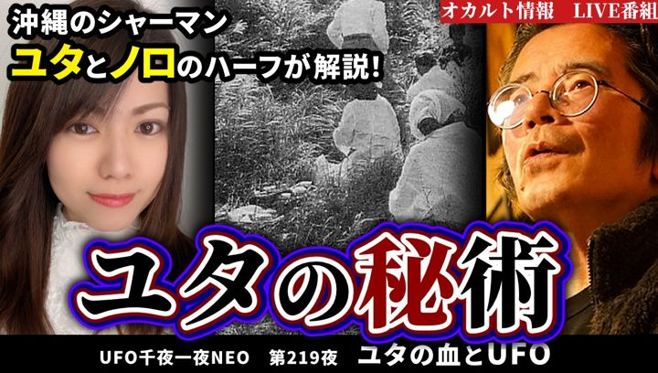
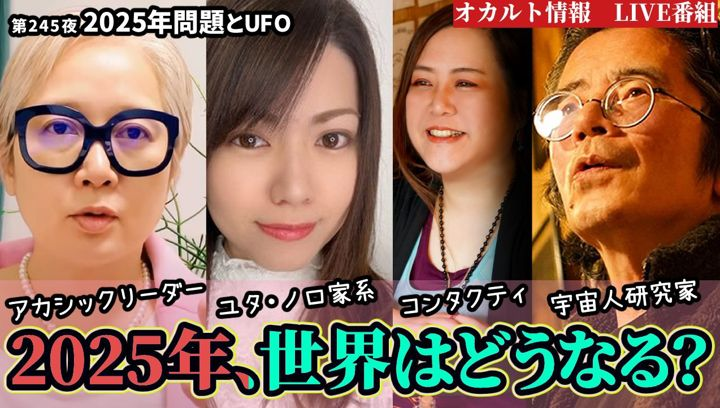
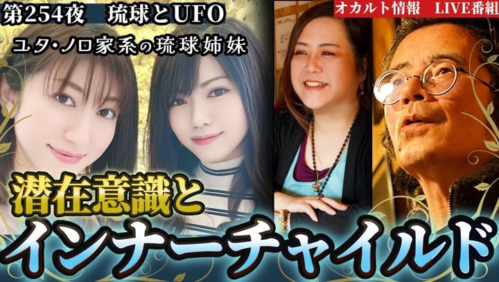

こんな方へ
For you- これからの人生の方向性について、一度立ち止まって考えたい
- 家族や職場、パートナーとの関係で、気持ちの整理をつけたい
- 自分自身のことを、別の角度から見つめ直してみたい
答えを決めつけるのではなく、ご自身で考えるきっかけになる時間を大切にしています。
鑑定について
About霊視鑑定は、守護存在からメッセージを受け取ったり、
前世、未来世、色んなお悩みに関する内容をお伝えするスピリチュアルセッションです。
お話を丁寧にお伺いしながら、ご相談者様が今どんなことに悩まれ、心を向けているのかを一緒に見ていきます。
受け取り方や感じ方には個人差がございます。
鑑定はオンラインや対面でもお受けしております。
対面は新宿駅の近くで行っております。
ご都合のよい鑑定方法をLINEでお知らせください。
プロフィール
Profileあき 琉球ユタ家系
琉球ユタ家系に生まれ、姉のあいりとともに「琉球ユタ家系姉妹 あいり＆あき」として活動しています。
霊視鑑定のほか、前世鑑定やパワーストーン鑑定、魂の色鑑定など、見えない世界のお話を幅広くお受けしています。
生まれた時から胎内記憶があり、見えない物が見えていました。 あき（本人より）
メディア出演
YouTube番組「UFO千夜一夜NEO」

第219夜「ユタの血とUFO」
第245夜「2025年問題とUFO」
第254夜「琉球とUFO」（姉・あいりと出演）
ご予約の流れ
Flow- 公式LINEを友だち追加下のボタンからLINEを開いてください。
- 「霊視鑑定希望」と送信そのひと言だけで大丈夫です。
- 日時・方法のご相談オンラインか対面か、ご希望の日時をお知らせください。
- ご予約確定あきからのご案内に沿って、ご予約が確定します。
資格・修了証
Certificates美容・健康の分野で学んできた修了証です。画像を押すと大きく表示されます。
※いずれも美容・健康分野の講座の修了証です。霊視の能力を公的に認定するものではありません。
※氏名と証書番号は伏せて掲載しています。
ご注意事項
Notice- 鑑定は、医療・心理療法・法律相談の代わりになるものではありません。体や心の不調、法律に関わるお悩みは、専門の機関にご相談ください。
- 鑑定の内容は、その後の結果や効果をお約束するものではありません。
- 日程の変更・キャンセルは、ご予約日の前日までにLINEでご連絡ください。
- 当日のキャンセルや、ご連絡のないキャンセルが続いた場合は、次回からのご予約をお受けできないことがあります。